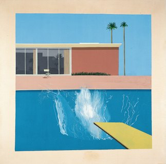

大水花 · 两周画一场只存在两秒的水花

画面里什么都没在动，只有一团水花还在飞。一栋色块般平整的粉橙色房子、两棵笔直的棕榈、一片近乎完美的钴蓝泳池——霍克尼把这一切画得像喷绘广告一样光滑冷静，唯独泳池右下角，一块柠檬黄跳水板还在微微颤动，板前炸开一蓬白色水花。跳水的人呢？画面里没有他。你只看得到他跳下去两秒钟以后留下的痕迹，而霍克尼为了画好这两秒钟的痕迹，足足画了两个星期。
01构图Composition
整幅画几乎是用水平线"叠"出来的：最上面一条天空蓝、往下是建筑立面、再往下是泳池边缘、最下面是大片泳池水面——像四条颜色横条整齐地摞在一起。垂直方向只有两棵棕榈树和建筑的窗棂做了简单的点缀，克制得几乎像在画建筑制图。真正打破这份工整的，是那块斜插入画面的柠檬黄跳水板：它是全画唯一的斜线，也是唯一一处"动态"的暗示，把视线一路引向水花炸开的地方。
更值得玩味的是"缺席"本身——没有跳水的人，没有涟漪之外的任何生命迹象，连椅子都空着。构图把观众的注意力，从"发生了什么"悄悄挪到了"谁刚刚离开"。
02配色Color Theory
霍克尼这张画的色彩非常"抠"——整幅画基本只用了四五种颜色，每一块都是滚筒滚出来的纯色平涂，没有渐变、没有明暗过渡，像极了印刷海报或商业招牌。粉橙色的建筑是暖色，钴蓝色的泳池是冷色，两者在色环上接近对比关系，把加州正午阳光下"晒得发烫的建筑"和"沁凉泳池水"这组体感对比，直接翻译成了色彩对比。柠檬黄的跳水板则是唯一的高纯度点缀色，像一声轻响，把视线钉在画面的关键位置上。
03技法Technique
霍克尼把整幅画布直接钉在墙上作画，没用画框绷布，画布四周特意留出一圈未上色的原色边——像一张放大的宝丽来照片。天空、建筑、泳池这些大色块，他用滚筒刷了两三层，追求的就是那种没有笔触、几乎"印刷感"的平整；等大色块干透，才用小笔一点点画上棕榈树、椅子、窗框反光，最后才轮到水花。水花的形状来自一本讲泳池施工的书里的照片——一次真实存在过、只持续约两秒钟的水花，他对着照片，用小笔一层层描了整整两周。霍克尼后来说："拍下一团水花的瞬间，它就变成了另一种东西"——这幅画正是把摄影定住的"另一种东西"，重新用绘画的时间去兑换回来。这也是他"水花三部曲"里最后、也最大的一张，前两张《小水花》《水花》都尺幅更小、画于1966年。
04为何动人Why It Moves Us
这幅画最打动人的地方，就是它自己揭穿的那个悖论：用两周时间，去精确复刻一件只存在两秒钟的事。建筑、泳池、棕榈树全部纹丝不动，唯独水花带着一种近乎暴力的动感，在一片死寂里挣扎着还没落定——这种"静止包裹住的瞬间"，比直接画一个跳水的人跳入水中要耐看得多，因为它把动作本身"藏"起来了，只留下证据，逼着你自己去脑补那个刚刚消失在画外的身影。加州阳光、私家泳池、极简线条的现代建筑，本该是最放松惬意的画面，可这份过分的干净和空无一人，又让人隐隐读出一丝孤独感——热闹的表象和空落落的现场，同时成立。
05作品背景Background
大卫·霍克尼（David Hockney，1937– ）出生于英国布拉德福德，1964年移居洛杉矶，从此彻底迷上了那里的强烈日照、私家泳池与包豪斯风格的现代住宅——这些元素后来构成了他"洛杉矶泳池系列"里最标志性的画面语言。《大水花》画于1967年4月至6月，霍克尼当时正在加州大学伯克利分校任教，建筑造型取材自他自己此前画的一批加州建筑速写，水花的形态则临摹自一本泳池施工指南里的照片。这幅画如今是泰特不列颠美术馆最受欢迎的馆藏之一，也是20世纪最广为流传的画作图像之一——2018年，霍克尼另一幅泳池题材作品《艺术家画像（泳池与两个人像）》在拍卖会上以9030万美元成交，一度刷新在世艺术家作品的拍卖纪录，足见这一系列在他个人创作生涯里的分量。
06可借鉴Steal This
- 用滚筒或大面积平涂代替渐变、晕染——去掉笔触和明暗过渡，画面会立刻带上一种干净的"海报感"。
- 暖色主体（粉橙、珊瑚）配一块高饱和冷色（钴蓝），再加一点高纯度点缀色（柠檬黄）——这组"暖底+冷块+亮点"三色公式百搭又抓眼。
- 留一圈"没画满"的原色边框或负空间，能让大面积平涂的色块不至于显得闷、透不过气。
- 粉橙墙面+泳池蓝+柠檬黄，是一套现成的"加州现代风"配色公式，搬进家居软装或穿搭配色都很好用。